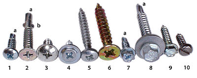
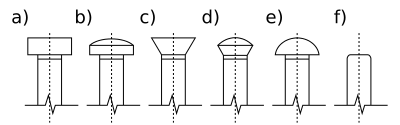
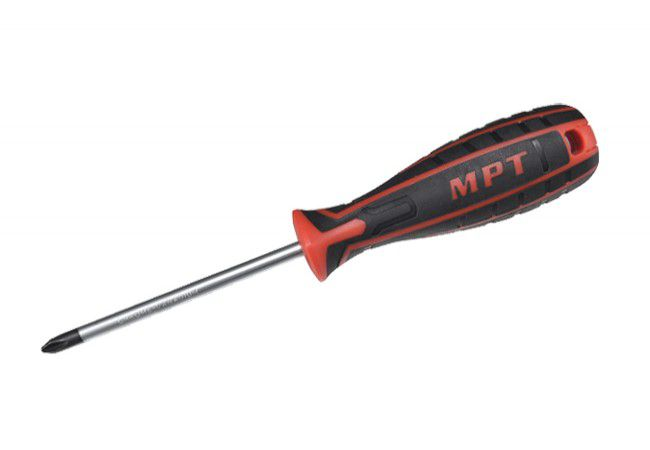

Wkręt
gwintowany trzpień, zwykle o kształcie lekko stożkowym, stanowiący łącznik w połączeniu gwintowym. Prawie wszystkie wkręty mają łeb, przeważnie z nacięciem. Gwinty wkrętów często nie są znormalizowane (czyli mogą mieć dowolny skok, w zależności od zastosowania).

Łby
- walcowy płaski
- walscowy soczewkowy
- stożkowy płaski
- stożkowy soczewkowy
- kulisty

Wkrętak (śrubokręt)
– Wkrętak składa się z rękojeści i grotu. W najprostszym wykonaniu jest to pręt, na jednym końcu ścięty lub spłaszczony tak, że powstała w ten sposób wąska krawędź umożliwia wsunięcie jej w wycięcie w łbie wkręta, co następnie, poprzez obrót wkrętaka wokół osi, umożliwia obrócenie wraz z nim samego wkrętu. Przeciwległy koniec pręta (grotu) zazwyczaj umocowany jest w uchwycie (rękojeści), zazwyczaj z tworzywa sztucznego, ułatwiającym obracanie wkrętaka, choć czasem stosuje się rozwiązanie polegające na wygięciu przeciwległego końca w sposób umożliwiający obrót narzędziem.
